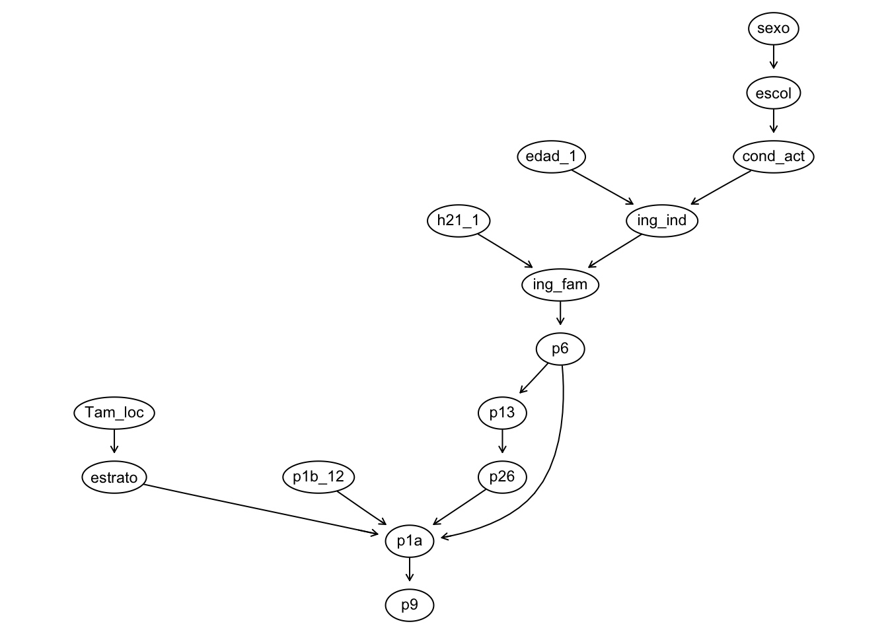
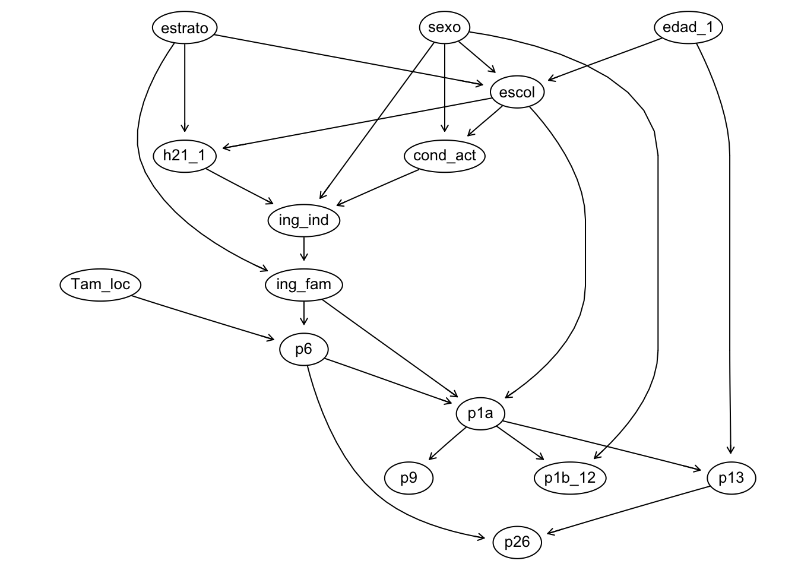
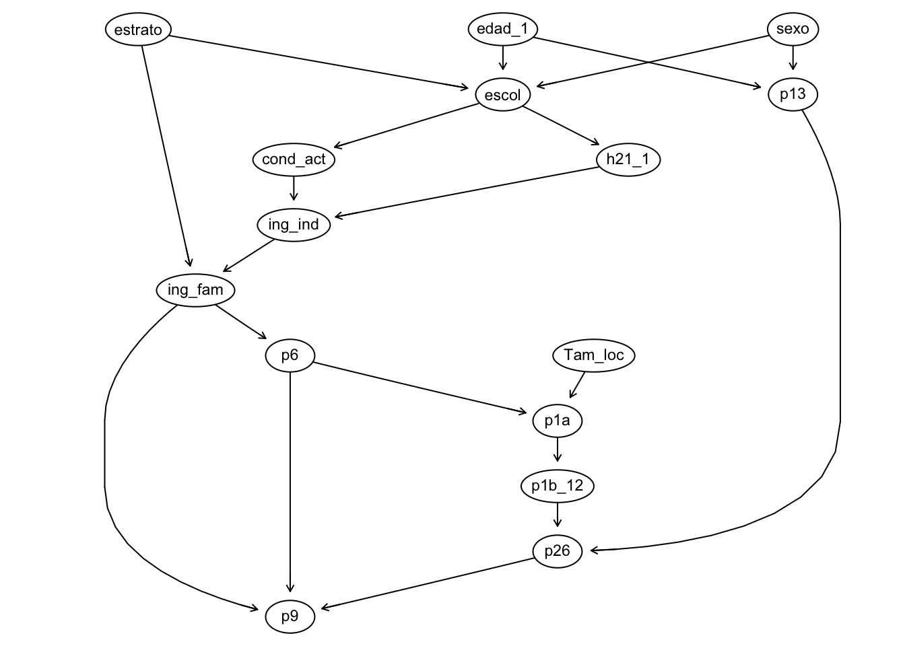
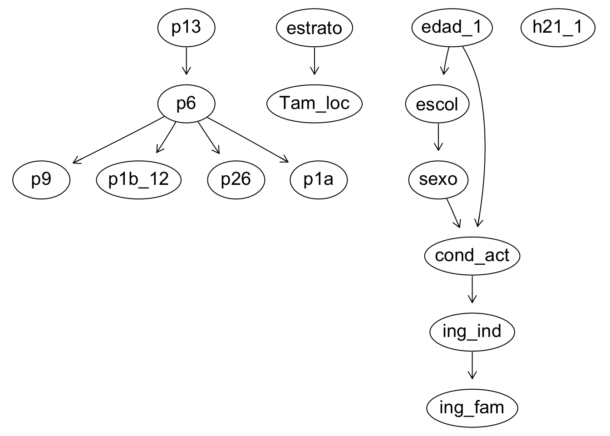

library(bnlearn)liempieza de datos definitiva para DAGs
data= read.csv("../data/enmt_unam_updated.csv")#se genera dataframe con variables necesarias
data <- data[, c("p9", "estrato", "Tam_loc", "sexo", "edad_1", "escol",
"h21_1", "ing_fam", "cond_act", "p1b_12", "p13", "p26", "p6",
"ing_ind", "p1a")
]dim(data) #se verifica que se haya cargado bien [1] 1191 15#se genera la primera DAG
dag1= empty.graph(nodes=c("p9", "estrato", "Tam_loc", "sexo", "edad_1", "escol",
"h21_1", "ing_fam", "cond_act", "p1b_12", "p13", "p26", "p6",
"ing_ind", "p1a"))#se definen arcos de dag1
arc_set1 =matrix(c("sexo", "escol",
"escol", "cond_act",
"cond_act", "ing_ind",
"edad_1", "ing_ind",
"ing_ind", "ing_fam",
"h21_1", "ing_fam",
"Tam_loc", "estrato",
"ing_fam", "p6",
"p6", "p13",
"p6", "p1a",
"estrato", "p1a",
"p13", "p26",
"p26", "p1a",
"p1b_12", "p1a",
"p1a", "p9"),
byrow=TRUE, ncol=2,
dimnames=list(NULL,c("from", "to")))
# "sale", "entra" #se guardan arcos en dag1
arcs(dag1)=arc_set1graphviz.plot(dag1, shape="ellipse") #se verficia que se haya cargado la info bien Loading required namespace: Rgraphviz
#preparacion de datos
# Discretiza y elimina nan
data_discreta <- data.frame(lapply(data, as.factor))
# Elimina las filas que tengan al menos un NA
data_discreta <- na.omit(data_discreta)#se ajusta red bn_mle1 a la dag1 por mle
bn_mle1 = bn.fit(dag1, data=data_discreta, method = "mle")#fuerzas entre arcos de red1/dag1
arc.strength(dag1, data = data_discreta, criterion = "mi") from to strength
1 sexo escol 4.825734e-07
2 escol cond_act 1.558249e-04
3 cond_act ing_ind 1.438481e-148
4 edad_1 ing_ind 6.700962e-01
5 ing_ind ing_fam 1.295871e-29
6 h21_1 ing_fam 1.000000e+00
7 Tam_loc estrato 0.000000e+00
8 ing_fam p6 9.321761e-05
9 p6 p13 4.711658e-276
10 p6 p1a 1.000000e+00
11 estrato p1a 1.000000e+00
12 p13 p26 2.502567e-16
13 p26 p1a 1.000000e+00
14 p1b_12 p1a 1.000000e+00
15 p1a p9 1.000000e+00score(dag1, data = data_discreta, type = "bic")[1] -257578.2score(dag1, data= data_discreta, type= "aic")[1] -86753.43The echo: false option disables the printing of code (only output is displayed).
# Se genera la segunda DAG
dag2 = empty.graph(nodes=c("p9", "estrato", "Tam_loc", "sexo", "edad_1", "escol",
"h21_1", "ing_fam", "cond_act", "p1b_12", "p13", "p26", "p6",
"ing_ind", "p1a"))
# se definen arcos de dag2
arc_set2 = matrix(c("sexo", "escol",
"edad_1", "escol",
"estrato", "escol",
"escol", "cond_act",
"sexo", "cond_act",
"escol", "h21_1",
"estrato", "h21_1",
"h21_1", "ing_ind",
"cond_act", "ing_ind",
"sexo", "ing_ind",
"ing_ind", "ing_fam",
"estrato", "ing_fam",
"ing_fam", "p6",
"Tam_loc", "p6",
"p6", "p1a",
"ing_fam", "p1a",
"escol", "p1a",
"p1a", "p1b_12",
"sexo", "p1b_12",
"p1a", "p9",
"p1a", "p13",
"edad_1", "p13",
"p13", "p26",
"p6", "p26"),
byrow=TRUE, ncol=2,
dimnames=list(NULL,c("from", "to")))
# se guardan arcos en dag2
arcs(dag2) = arc_set2
graphviz.plot(dag2, shape="ellipse") # se verifica que se haya cargado bien
# reutiliza data_discreta ya creada en la celda de dag1
# se ajusta red bn_mle2 a la dag2 por mle
bn_mle2 = bn.fit(dag2, data=data_discreta, method = "mle")
# fuerzas entre arcos de red2/dag2
arc.strength(dag2, data = data_discreta, criterion = "mi") from to strength
1 sexo escol 1.000000e+00
2 edad_1 escol 4.410434e-01
3 estrato escol 9.997515e-01
4 escol cond_act 2.100879e-01
5 sexo cond_act 2.775725e-48
6 escol h21_1 1.000000e+00
7 estrato h21_1 1.000000e+00
8 h21_1 ing_ind 1.000000e+00
9 cond_act ing_ind 1.405755e-26
10 sexo ing_ind 1.000000e+00
11 ing_ind ing_fam 2.042957e-45
12 estrato ing_fam 9.999994e-01
13 ing_fam p6 1.621509e-01
14 Tam_loc p6 3.634165e-01
15 p6 p1a 1.000000e+00
16 ing_fam p1a 1.000000e+00
17 escol p1a 1.000000e+00
18 p1a p1b_12 1.787432e-15
19 sexo p1b_12 1.000000e+00
20 p1a p9 1.000000e+00
21 p1a p13 2.663149e-02
22 edad_1 p13 1.000000e+00
23 p13 p26 9.993074e-01
24 p6 p26 1.000000e+00score(dag2, data = data_discreta, type = "bic")[1] -55180.83score(dag2, data = data_discreta, type = "aic")[1] -29816.19#se define la 3era DAG
dag3 = empty.graph(nodes = c("p9", "estrato", "Tam_loc", "sexo", "edad_1", "escol",
"h21_1", "ing_fam", "cond_act", "p1b_12", "p13", "p26", "p6",
"ing_ind", "p1a"))
# arcos en la 3era DAG
arc_set3 = matrix(c(
"sexo", "escol",
"edad_1", "escol",
"estrato", "escol",
"escol", "cond_act",
"escol", "h21_1",
"cond_act", "ing_ind",
"h21_1", "ing_ind",
"ing_ind", "ing_fam",
"estrato", "ing_fam",
"ing_fam", "p6",
"Tam_loc", "p1a",
"p6", "p1a",
"p1a", "p1b_12",
"edad_1", "p13",
"sexo", "p13",
"p13", "p26",
"p1b_12", "p26",
"p26", "p9",
"p6", "p9",
"ing_fam", "p9"
), byrow = TRUE, ncol = 2, dimnames = list(NULL, c("from", "to")))# se guardan los arcos en dag3
arcs(dag3) = arc_set3
graphviz.plot(dag3, shape = "ellipse")
# ajuste por Máxima Verosimilitud (MLE)
bn_mle3 = bn.fit(dag3, data = data_discreta, method = "mle")
#fuerza entre los arcos
arc.strength(dag3, data = data_discreta, criterion = "mi") from to strength
1 sexo escol 1.000000e+00
2 edad_1 escol 4.410434e-01
3 estrato escol 9.997515e-01
4 escol cond_act 1.558249e-04
5 escol h21_1 3.330781e-44
6 cond_act ing_ind 1.236287e-101
7 h21_1 ing_ind 9.976100e-01
8 ing_ind ing_fam 2.042957e-45
9 estrato ing_fam 9.999994e-01
10 ing_fam p6 9.321761e-05
11 Tam_loc p1a 1.146712e-01
12 p6 p1a 6.311502e-22
13 p1a p1b_12 2.025146e-52
14 edad_1 p13 2.467966e-01
15 sexo p13 2.846533e-02
16 p13 p26 1.000000e+00
17 p1b_12 p26 1.000000e+00
18 p26 p9 1.000000e+00
19 p6 p9 1.000000e+00
20 ing_fam p9 1.000000e+00# evaluación del ajuste del modelo
score(dag3, data = data_discreta, type = "bic")[1] -46978.95score(dag3, data = data_discreta, type = "aic")[1] -28065.27best_dag=hc(data_discreta)modelstring(best_dag)[1] "[estrato][edad_1][h21_1][p13][Tam_loc|estrato][escol|edad_1][p6|p13][p9|p6][sexo|escol][p1b_12|p6][p26|p6][p1a|p6][cond_act|sexo:edad_1][ing_ind|cond_act][ing_fam|ing_ind]"graphviz.plot(best_dag, shape="ellipse")
#modelo del mejor DAG#contestar querie 1
#probabilidad de usar transporte público colectivo dado ingreso bajo/medio.
print('Transporte público dado un ingreso bajo/medio')[1] "Transporte público dado un ingreso bajo/medio"prob_colectivo_ing2 = cpquery(bn_mle3, event = (p1a == "p1a_5" | p1a == "p1a_4"), evidence = (ing_fam == "2"),n = 10^6)
#probabilidad de usar auto colectivo dado ingreso bajo/medio.
print('Auto dado un ingreso bajo/medio')[1] "Auto dado un ingreso bajo/medio"prob_auto_ing2 = cpquery(bn_mle3, event = (p1a == "p1a_12"), evidence = (ing_fam == "2"), n = 10^6)
#se hace la comparación para un nivel alto de ingreso.
print('Comparación para un nivel alto de ingreso')[1] "Comparación para un nivel alto de ingreso"prob_colectivo_ing8 = cpquery(bn_mle3, event = (p1a == "p1a_5" | p1a == "p1a_4"), evidence = (ing_fam == "8"), n = 10^6)
prob_auto_ing8 = cpquery(bn_mle3, event = (p1a == "p1a_12"), evidence = (ing_fam == "8"), n = 10^6)
#contestar querie 2
#la probabilidad de sufrir un accidente dado que tiene un auto en casa.
print('Sufrir un accidente dado que tiene un auto en casa')[1] "Sufrir un accidente dado que tiene un auto en casa"prob_accidente_con_auto = cpquery(bn_mle3, event = (p26 == "1"), evidence = (p6 == "1"), n = 10^6)
#la probabilidad de sufrir un accidente dado que no tiene un auto en casa.
print('Sufrir un accidente dado que no tiene un auto en casa')[1] "Sufrir un accidente dado que no tiene un auto en casa"prob_accidente_sin_auto = cpquery(bn_mle3, event = (p26 == "1"), evidence = (p6 == "2"), n = 10^6)
#contestar querie 3
print('diferencia H/M en uso de auto particular para ir al trabajo')[1] "diferencia H/M en uso de auto particular para ir al trabajo"# el código -1 en p1b_12 lo recodificamos a un string explícito "No aplica"
# para no perder la fila completa con na.omit()
data$p1b_12[data$p1b_12 %in% c(-1, 97, 99)] <- "No aplica"
# 1 sola fila con código 8 (probable NS/NC) en escol, la mandamos a NA
data$escol[data$escol == 8] <- NA
# se re-factoriza data_discreta ya con los códigos corregidos
data_discreta <- data.frame(lapply(data, as.factor))
data_discreta <- na.omit(data_discreta)
# se re-ajusta bn_mle3 con los datos ya limpios
bn_mle3 = bn.fit(dag3, data = data_discreta, method = "mle")
# P(p1b_12 = "Ir al trabajo" | sexo) comparando hombres vs mujeres
# nota: comillas en "1" porque p1b_12 ahora mezcla números y el string
# "No aplica", así que toda la columna quedó como texto al factorizar
cpquery(bn_mle3, event = (p1b_12 == "1"), evidence = (sexo == 1)) #hombre[1] 0.1221196cpquery(bn_mle3, event = (p1b_12 == "1"), evidence = (sexo == 2)) #mujer[1] 0.1182722#contestar querie 4
print('camión fornaeo')[1] "camión fornaeo"#uscar camion foraneo dado que tienes cierto nivel de escolaridad
cpquery(bn_mle3, event= (p1a=="p1a_6"), evidence=(escol==1)) #ninguna [1] 0.03771013cpquery(bn_mle3, event= (p1a=="p1a_6"), evidence=(escol==2)) #primaria[1] 0.03808864cpquery(bn_mle3, event= (p1a=="p1a_6"), evidence=(escol==3)) #secundaria [1] 0.04074272cpquery(bn_mle3, event= (p1a=="p1a_6"), evidence=(escol==4)) #prepa [1] 0.03703704cpquery(bn_mle3, event= (p1a=="p1a_6"), evidence=(escol==5)) #posgrado o universiad[1] 0.04216867print('carro particular')[1] "carro particular"cpquery(bn_mle3, event= (p1a=="p1a_12"), evidence=(escol==1)) #ninguna [1] 0.1877023cpquery(bn_mle3, event= (p1a=="p1a_12"), evidence=(escol==2)) #primaria[1] 0.1785586cpquery(bn_mle3, event= (p1a=="p1a_12"), evidence=(escol==3)) #secundaria [1] 0.1894989cpquery(bn_mle3, event= (p1a=="p1a_12"), evidence=(escol==4)) #prepa [1] 0.1879453cpquery(bn_mle3, event= (p1a=="p1a_12"), evidence=(escol==5)) #posgrado o universiad[1] 0.2146893ci.test("escol", "p1a",
data = data_discreta,
test = "x2")
Pearson's X^2
data: escol ~ p1a
x2 = 185.37, df = 80, p-value = 2.413e-10
alternative hypothesis: true value is greater than 0